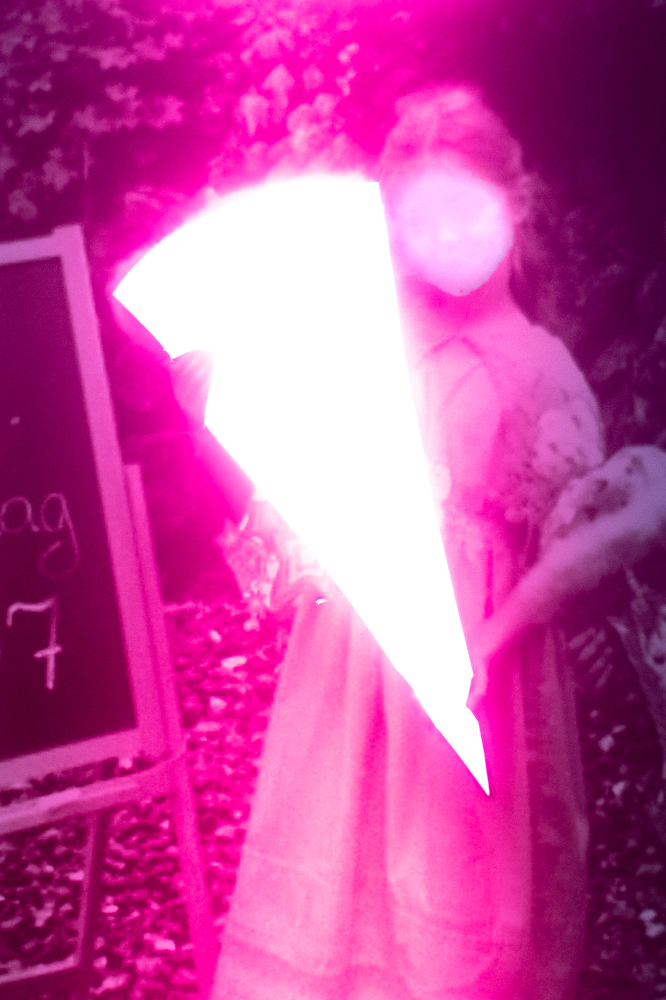
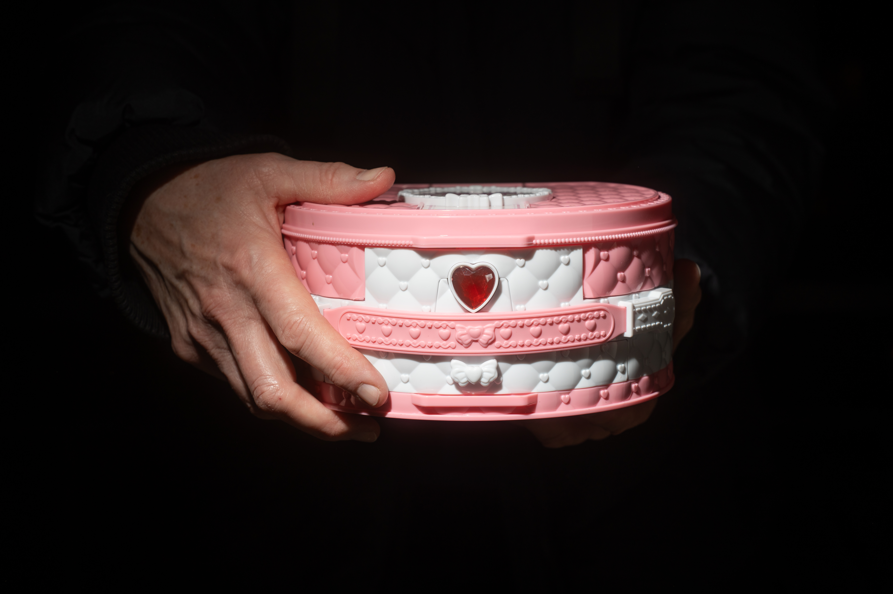
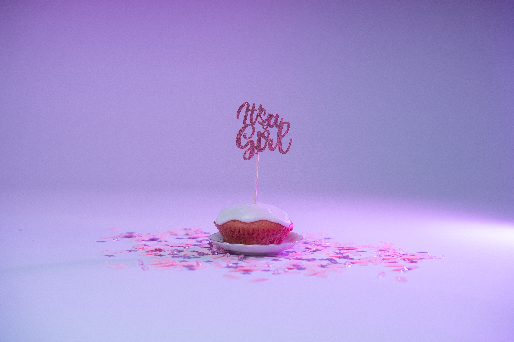
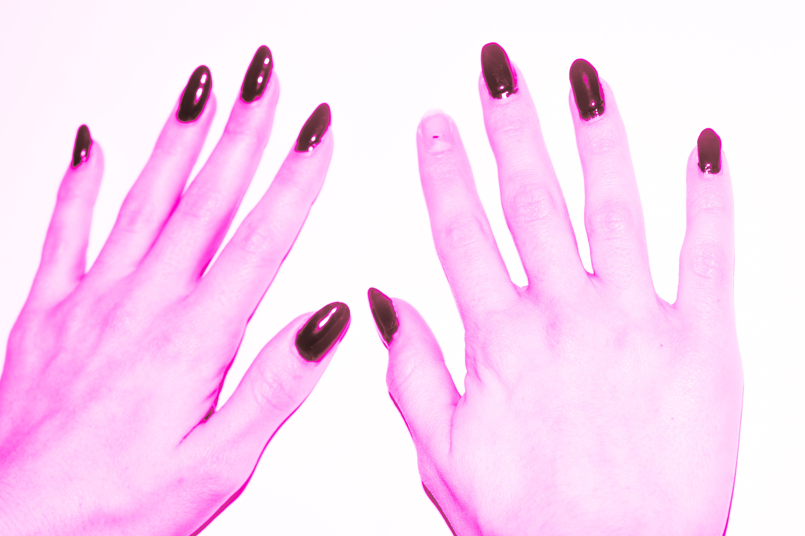
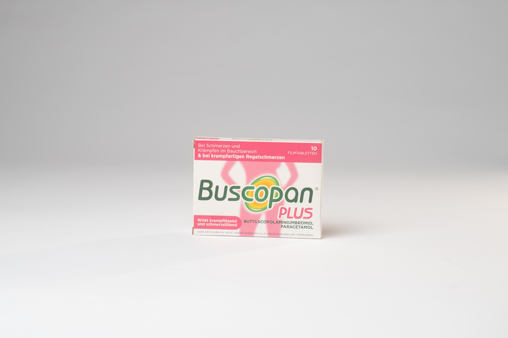
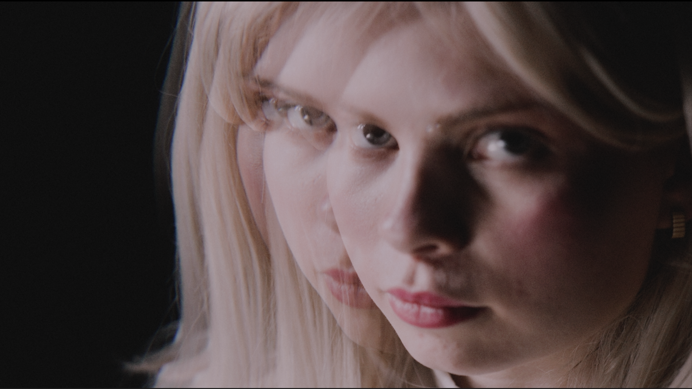
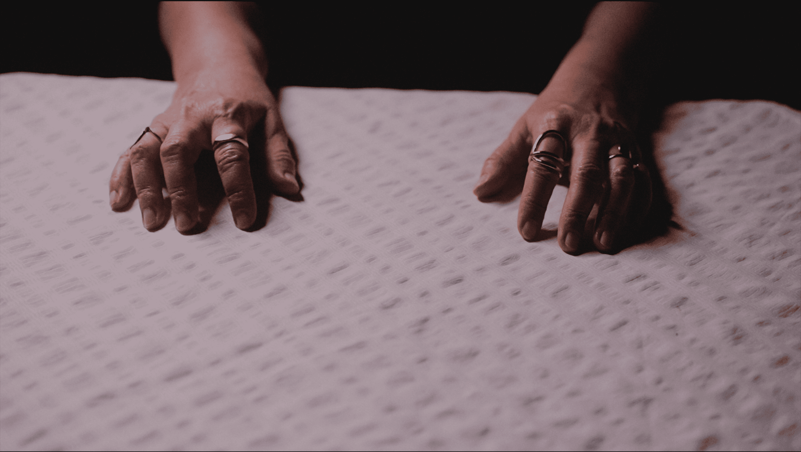
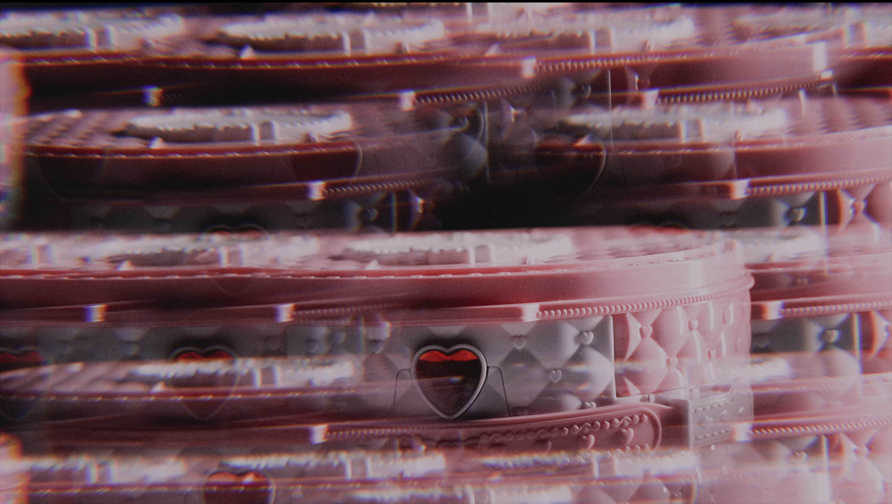

PINK TAX
»Pink Tax« (Serie), 2024. Fotografische Reihe aus dem Kurs »Wut – Was macht die Wut« bei Linn Schröder.



REPRODUKTION
Über die Weitergabe und das Aufdrängen weiblicher Rollenklischees. Kurzfilm, entstanden im Kurs »Autor*innenfilm« bei Katharina Duve, 2025.
ALPHA 1
Experimente mit dem Einfrieren von Pflanzen und Archivmaterial – entstanden im Kurs »Porträt, Stillleben – Reprofotografie« bei Irina Ruppert.
LOW SHUTTER EXPERIMENTE
entstanden 2024.